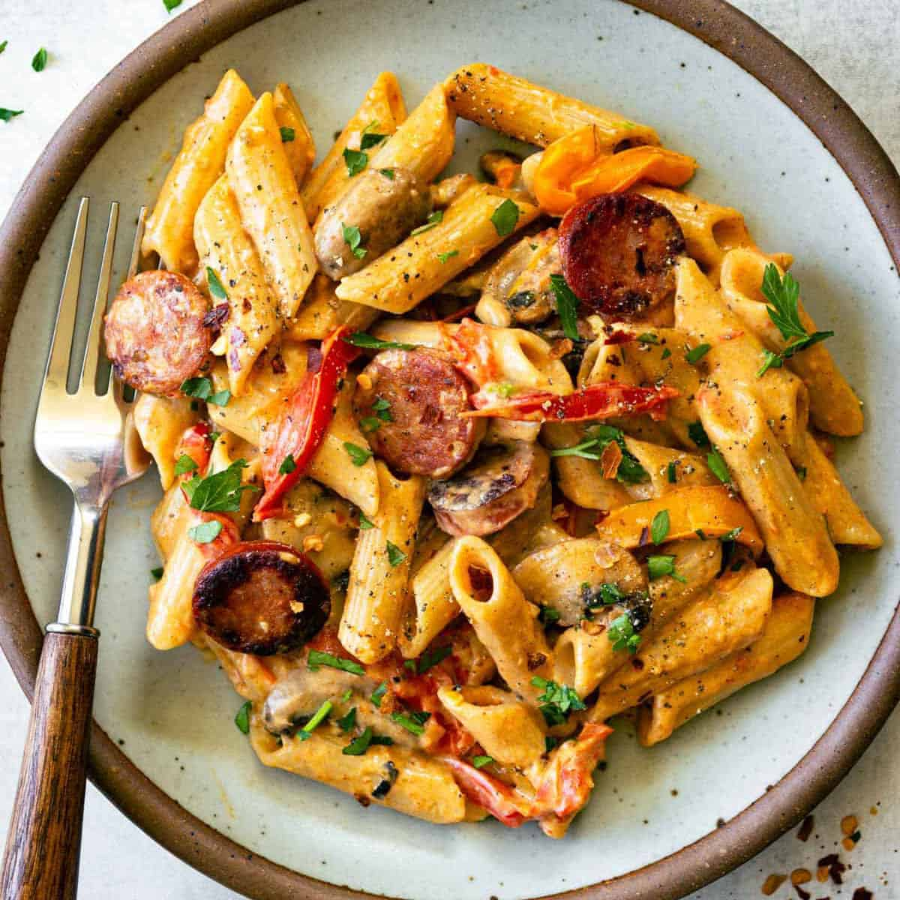

Sausage Pasta

Description
Sausage Pasta has become one of the staples in our household for dinner because it is so easy to make. There are few ingredients, it is relatively quick to make, and it can feet a bunch of hungry people. Once you first taste it, you're not going to forget it and may even add it to your rotation for meals.
Ingredients
- Sausage
- Pasta
- Broth
- Garlic Powder
- Salt
- Pepper
- Secret Ingredient: Hot Honey
Steps
- Bring the broth to a boil.
- Begin browning the sausage.
- Add the pasta to the boiling broth.
- Once you have browned the sausage (approximately 5 minutes), add half a cup of water to the pan and cover. Steam for about 12 minutes flipping the sausages halfway through.
- Drain the pasta once it has cooked.
- Season the pasta with Garlic powder, Salt, Pepper, and Hot Honey.
- Chop up the sausage and combined in a plate or on a bowl.